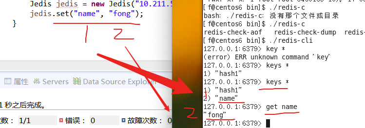

redis01(centos6–yum)
第一天
第一节(配置下载)
centos6的安装
根据02.md来安装系统
paralllel tools的安装
把其他用户拥有root权限
到root用户修改权限 位于/etc/sudoers文件的权限(
执行vi命令，编辑/etc/sudoers文件，添加要提升权限的用户；在文件中找到root ALL=(ALL) ALL，在该行下添加提升权限的用户信息，如：
root ALL=(ALL) ALL
user ALL=(ALL) ALL
保存退出，并恢复/etc/sudoers的访问权限为440
chmod 440 /etc/sudoers
ls -l /dev | grep cdrom
sr0的文件–cdrom(这个就是parallel tools)
sudo mount /dev/cdrom /mnt 完成挂载
cd /mnt
sudo ./install 安装tools
d
依赖JDK，TOMCAT，MYSQL
yum install glibc.i686 (———–jdk)
yum -y install libaio.so.1 libgcc_s.so.1 libstdc++.so.6 (———–mysql)
yum update libstdc++-4.4.7-4.el6.x86_64
yum install gcc-c++
卸载openjdk(原生的jdk)
查询java -qa (query all)
rpm -qa |grep java
卸载
rpm -e -nodeps ##
sudo rpm -e –nodeps java-1.6.0-openjdk-1.6.0.41-1.13.13.1.el6_8.x86_64
解压
sudo tar -zxvf jdk-7u71-linux-i586.tar.gz -C /usr/local/java (-c 是解压成一个文件夹)
配置jdk的环境变量
- vim /etc/profile
#set java environment
JAVA_HOME=/usr/local/java/jdk1.7.0_71
CLASSPATH=.:$JAVA_HOME/lib/tools.jar
PATH=$JAVA_HOME=/bin:$PATH
export JAVA_HOME CLASSPATH PATH
(md有乱码)
> 重新加载配置文件：【否则环境变量不会重新执行】
>
> source /etc/profilejdk的环境没问题 出现错误(docker 中的centos的jdk )
sudo yum install glibc.i686
mysql
卸载mysql
sudo rpm -e –nodeps mysql-libs-5.1.73-8.el6_8.x86_64
为什么要卸载自带的:体验自己配置的美妙(骚话
~)-
rpm -ivh MySQL-client-5.5.49-1.linux2.6.i386.rpm
不用指定安装目录——会自动的安装在 /usr目录下
可能会缺少依赖
yum install libncurses.so.5
不能开启mysql 服务————without updating PID file
解决:
启动成功:
修改mysql密码
1、编辑/etc/my.cnf(一般情况下) 这里是特殊情况 rpm安装的
在[mysqld] 配置部分添加一行
skip-grant-tables
2、保存后重启mysql
service mysqld restart
3、登录数据库重新设置root密码
mysql -uroot -p
4、回车登录
>use mysql;
>update user set password=password(“123456”)where user=”root”;
更改密码为 newpassword
>flush privileges; 更新权限
>quit 退出删除/etc/my.cnf(这里my-default.cnf /usr/share/mysql)文件中添加的“skip-grant-tables”行，重启mysql；
用新设的密码就能正常登录了；
mysql服务自动的开启
//赋予root用户所有权限，远程登录密码是123456
>grant all privileges on . to ‘root’ @’%’ identified by ‘123456’;
>flush privileges;
Linux防火墙默认拦截3306端口
/sbin/iptables -I INPUT -p tcp –dport 3306 -j ACCEPT
/etc/rc.d/init.d/iptables save
d
d
d
d
tomcat
解压tomcat
tar -zxvf apache-tomcat-7.0.57.tar.gz -C /usr/local/tomcat
设置防火墙：
开放8080端口
/sbin/iptables -I INPUT -p tcp –dport 8080 -j ACCEPT
保存配置
/etc/rc.d/init.d/iptables save
启动tomcat：
启动tomcat
执行 /usr/local/tomcat/apache-tomcat-7.0.57/bin/startup.sh
关闭tomcat
执行 /usr/local/tomcat/apache-tomcat-7.0.57/bin/shutdown.sh
./startup.sh 如果报错 可能与jdk没正确配置有关
/etc/profile修改
d
优点：①<u>数据之间有关系，</u>进行数据的增删改查时非常方便的。
②关系型数据库 有事务操作。 <u>保证数据的完整性</u>
缺点：1、因为数据和数据之间有关系的，<u>关系是由底层大量算法保证</u>
大量算法会<u>拉低系统运行速度</u>
大量算法<u>会消耗系统资源</u>
3、<u>甚至无法更改字段</u>
update product set cname = ‘手机数码’;//修改所有数据
把商品表的cname字段，由varchar(64), char(100)
适合处理一般量级数据，安全。
非关系型数据库（NOSQL）：
<u>为了处理海量数据</u>，(不会造成经济巨大的损失)
Redis
优点：1、海量数据的增删改查，非常轻松应对
2、海量数据的维护非常轻松。
缺点：1、<u>数据和数据之间没有关系，所以不能一目了然</u>
2、非关系型数据库，没有关系，<u>没有强大的事务保证数据的 完整和安全</u>
适合处理海量数据，效率。不一定安全
奥运健儿奖牌总数
<u>关系型数据库+非关系型数据库 ====》项目</u>
<u>重要数据 海量操作数据，不重要</u>使用环境redis
Redis使用环境：
1、关系型数据库的缓存存在
2、可以做任务队列
3、大量数据运算
redis安装
gcc redis是C语言开发，安装redis需要将源码编译，
yum install gcc-c++
redis安装
- 步骤1： 解压文件 tar –zxvf redis-3.0.0.tar.gz
- 步骤2： 编译redis (编译，将.c文件编译为.o文件)
> 进入解压文件夹，cd redis-3.0.0
> 执行**make**
Ps:如果没有安装gcc，编译将出现错误提示。（如果安装失败，必须删除文件夹，重写解压）
- 步骤3： 安装
> make PREFIX=/usr/local/redis install
> 安装在/usr/local/redis目录下
- 步骤4： 安装完后，在/usr/local/redis/bin下有几个可执行文件

- 步骤5： redis启动需要一个配置文件redis.conf，可以改端口号等信息。
> cd /home/f/bag/redis-3.0.0 (刚刚解压缩完的文件夹===编译的文件夹)
>
> cp redis.conf /usr/local/redis
>
>
3. redis server端启动成功

4. cli端启动成功


5. 如何机器在外网
> 启动redis，客户端连接：默认 连接6379端口
>
> redis-cli -h ip地址 -p 端口
6. ### 以上是前端的连接方式
缺点:-<u>无法部署集群</u>----容错性差----一台挂全部挂
7. 关闭redis-server
redis的关闭：
①查询到PID,kill -9 pid 【断电，非正常关闭，一般不用，否则造成数据丢失】
②正常关闭 【正常关闭，数据保存】
**./bin/redis-cli shutdown**
8. 后端模式
- 改usr/local/redis/redis.conf 线程保护开启

- 启动时，指定配置文件
- > cd /usr/local/redis/
>
> ./bin/redis-server ./redis.conf

-
9. Key名不要太短，最好是有意义。mysql root 123456
root wbhszmm1 (我不会设置密码1)
第二节(其他笔记)
命令
管理 |
查看进程
ps -ef
管道 把带有bash 的进程命令查询出来
杀死进程
kill -9 PID
网络及重启
rpm
nautilus 打开图形文件夹
第三节(redis 少量命令)
string命令
redis和mysql的编解码问题 和数据与传递
MySQL-关系型数据库，二进制不安全。【乱码丢失数据】
Redis 二进制数据安全
(error) MISCONF Redis is configured to save RDB snapshots, but is currently not able to persist on disk. Commands that may modify the data set are disabled. Please check Redis logs for details about the error.
解决:
运行config set stop-writes-on-bgsave-error no 命令后，关闭配置项stop-writes-on-bgsave-error解决该问题。
增删改查
赋值：———-增改
- set key value：如果该key存在则进行覆盖操作。总是返回”OK”
取值：———-查
- get key：获取key的value。如果与该key关联的value不是String类型，redis将返回错误信息，因为get命令只能用于获取String value；如果该key不存在，返回(nil)。
删除：———-删
del key ：删除指定key
返回值是数字类型，表示删了几条数据
getset ——先拿到名字在modify

扩展string 命令
incr key
decr key
appent key value
拼凑字符串。如果该key存在，则在原有的value后追加该值；如果该key不存在，则重新创建一个key/value
incrby key increment
incrby num1 10 num1 = num1 + 10
flushdb
清空db的数据
hash的命令
Hash —- {username:”张三”,age:”18”,sex:”man”}——javaBean
Hash特点：占用的磁盘空间极少


赋值：
- hset key field value：为指定的key设定field/value对（键值对）。
- **hmset key field value [field2 value2 …]**：设置key中的多个filed/value
取值：
- hmget key filed1 filed2 ….：获取key中的多个filed的值
- hgetall key：获取key中的所有filed-vaule
删除：
- **del key** ：删除整个hashhincrby hash1 age 10
key field increment
判断hash1是否存在(key)
hexists hash1 uname
判断hash1(key)的长度
hlen hash1
hash1的的所有字段和值
hkeys hash1
hvals hash1
jedis操作数据库 eclipse
防火墙设置
解决:
开放8080端口
/sbin/iptables -I INPUT -p tcp –dport 6379 -j ACCEPT
保存配置
/etc/rc.d/init.d/iptables save
eclipse访问redis成功

第二天(额外扩展)
第一节
putty客户端 win传送文件到linux
基本命令格式：pscp 文件 用户名@LinuxIP:目录
例子: pscp D:\testspringmvc.war root@10.126.45.56:/opt/java/
linux的/usr/没有权限,,/tmp/可以